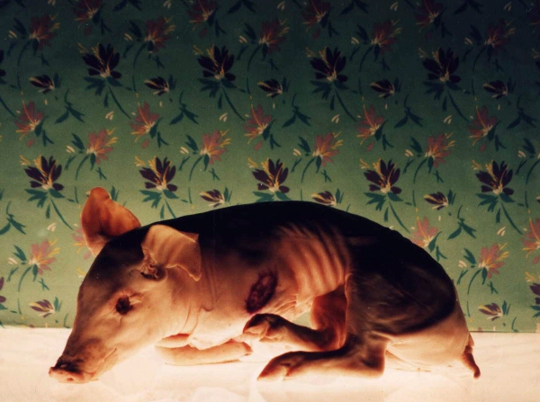

ILHA DAS FLORES (Isla de las flores)
|
(35 mm, 12 min, cor, 1989) Un tomate es plantado, cosechado, transportado y vendido en un supermercado, pero se pudre y acaba en la basura. ¿Acaba? No. ISLA DE LAS FLORES lo sigue hasta su verdadero final, entre animales, basura, mujeres y niños. Y entonces queda clara la diferencia que existe entre tomates, cerdos y seres humanos. |
 Foto por Carlos Gerbase |
{kind=link}
ASSISTIR (PORTA CURTAS)
Dirección: Jorge Furtado
Producción Ejecutiva: Monica Schmiedt, Giba Assis Brasil e Nora Goulart
Guión: Jorge Furtado
Dirección de Fotografia: Roberto Henkin e Sérgio Amon
Dirección de Arte: Fiapo Barth
Música: Geraldo Flach
Dirección de Producción: Nora Goulart
Montaje: Giba Assis Brasil
Asistente de Dirección: Ana Luiza Azevedo
Uma Producción de la Casa de Cinema PoA
Elenco Principal
Paulo José (Narración)
Ciça Reckziegel (Dona Anete)
Prêmios
- 17º Festival do Cinema Brasileiro, Gramado, 1989:
Mejor película de cortometraje (jurado oficial, jurado popular y premio de la crítica), Mejor guión, Mejor montaje y más 4 premios regionales. - 40º International Filmfestival, Berlín, Alemania, 1990:
Oso de Plata para cortometraje. - Premio Air France, Rio de Janeiro, 1990:
Mejor cortometraje brasileño. - Premio Margarida de Prata (CNBB), Brasilia, 1990:
Melhor curta-metragem. - 3º Festival Internacional del Cortometraje, Clermont-Ferrand, Francia, 1991:
Premio Especial del Jurado, Mejor Película (Jurado Popular). - American Film and Video Festival, New York, 1991:
Blue Ribbon Award. - 7º En el-budget Kurzfilmfestival, Hamburgo, Alemania, 1991:
Mejor Película. - Festival International du Film de Region, 1994:
Mejor Película. - Exibido na mostra "Os 10 Melhores curtas brasileiros da década, no Cineclube Estação Botafogo, Rio de Janeiro, 1990.
Crítica
"La mejor película (del) Festival de Gramado dura menos de 20 minutos y narra la trayectoria de un tomate. Después de la exhibición de ISLA DE LAS FLORES, el Cine Embaixador oyó la mayor aclamación de este año. Todos los otros cortometrajistas que esperaban llevarse el trofeo Kikito de mejor película se quedaron cabizbajos (...) No hay duda: ISLA DE LAS FLORES es una obra prima. Después de él, el documentario nunca más será lo mismo."
(Artur Xexéo, Jornal do Brasil, Rio de Janeiro, 17/06/1989)
"ISLA DE LAS FLORES encantó las inteligencias medianas y globales de los artistas nacionales. Se Trata de una obra redundante, demagógica, llamativa e incapaz de permitir la actividad del intelecto ajeno. (...) No hay una sola novedad de contenido en ISLA DE LAS FLORES. Formalmente, es un manual para analfabetos. La escena en que Las personas recogen la basura es capaz de superar los peores programas globales en chantaje emocional. La burguesía presente en Gramado deliró. (...) Se usa un tópico sobre la libertad, 'término inexplicable pero de decodificación universal', o cualquier cosa que lo valga (...) para dar el cierre de oro. El 'efecto Collor' funcionó otra vez."
(Juremir Silva, Zero Hora, Porto Alegre, 17/06/1989)
"Nunca hubo una escena semejante en las 16 ediciones anteriores del Festival de Gramado: toda la platea que atiborraba el Palacio de los Festivales aplaudiendo de pie e histéricamente, un cortometraje. (...) La película ISLA DE LAS FLORES, de 13 minutos de duración, pegó al Festival con el vigor de un CIUDADANO KANE: es nuevo, original, gracioso, contundente y, finalmente, emocionante, al cerrarse con una citación de Cecília Meirelles: 'libertad es una palabra que el sueño humano alimenta, que no hay nadie que explique y nadie que no la entienda'."
(Edmar Pereira, Jornal da Tarde, São Paulo, 17/06/1989)
"El único documental entre los 13 cortos seleccionados se ríe de su propio género. Desarma con originalidad y vigor creativo el discurso paternalista que fundamenta la mayoría de los documentarios brasileños (...), con una narrativa ingeniosa que sigue en un creciente de dejarnos sin aliento. (...) ISLA DE LAS FLORES es el resultado de una alquimia muy especial, donde todo sale bien. Es un corto bien humorado, sin que con eso transforme la desgracia (...) en materia de risas. Jorge Furtado inventa así el documental de crueldad."
(Maria do Rosário Caetano, Correio Braziliense, Brasília, 17/06/1989)
"Abriendo el programa, y mucho más sorprendente, el corto brasileño Isla de las Flores, que a través de una narración sarcástica construye una pirámide de informaciones que están involucradas en la jornada de un tomate de la plantación a la basura. Dirigido por Jorge Furtado, la película parece fácil e irreverente en su comienzo, pero es construida en un creciendo de indignación que hace con que alcance su real propósito".
(Janet Maslin, New York Times, 1991)
"Ou peut naître arbre, fleur ou papillon. L'une des particularités de ILHA DAS FLORES (prix de la presse et du public du XIIIe Festival de Clermont- Ferrand) est d'être dépourvue de végétaux odoriférant, sinon de mauvaises odeurs. Ce docucu donc, traite doctement (et sobrement, avec un humour sousjacent et sans excès de fioritures) des rapports production-distribution-consommation à partir d'une plantation de tomates."
(Michel Roudevitch, Libération, Paris, 06/03/1991)
"ISLA DE LAS FLORES, del portoalegrense Jorge Furtado, vencedor del Oso de Plata en Berlín'90, es una película política que hace reír con sarcasmo del inicio al fin. En apenas 13 minutos, dice todo aquello que es necesario saber sobre quien es responsable por la masacre del planeta Tierra, partiendo de la basura y de un tomate."
(Roberto Silvestri, Il Manifesto, Milão, 07/03/1991)
"El festival de Clermont-Ferrand, en Francia, seleccionó dos películas brasileñas para constar en la lista de los cien más importantes cortos en la historia del cine. Los elegidos fueron: Cuero de Gato (1962), de Joaquim Pedro de Andrade e Isla de las Flores (1989) de Jorge Furtado."
(Revista SET, 1995)
"Sin duda alguna, los 12 minutos más potentes del cine brasileño. (...) El texto está dirigido en tono irónico por Jorge Furtado a 'extraterrestres' - que desconocen todo sobre los seres humanos, su planeta, sus sistemas económicos, sus creencias, sus prioridades, su concepto de libertad. En el fondo, Jorge Furtado y equipo (el grupo de la Casa de Cinema de Porto Alegre) promueven densa reflexión sobre el destino del hombre pobre, aquél que no conquistó sus derechos de ciudadano, y por eso disputa la basura con cerdos."
(Maria do Rosário Caetano, Jornal do MEC, Brasília, outubro/1998)
"Parodia del diccionario, del documental didáctico - en el cual las imágenes sólo ilustran la narración -, del grueso de los reportajes en la televisión. Pero, en el fondo, parodia de la matriz de estos discursos: la ciencia positivista. (...) En la imagen final, el ser humano aparece como ese ser único, mucho más allá de cualquier definición. (...) En la situación de mayor degradación, por una escritura compuesta de foco, luz y velocidad, el registro cinematográfico sugiere la transcendencia del tiempo de la existencia. Ser entre entes es en el hombre y en su libertad esencial donde habita, aunque masacrado, el único sentido. El parodiador se revela como un humanista."
(Leandro Rocha Saraiva, em "Cine documental en América Latina", Paulo Paranaguá (org.), Ediciones Cátedra, Madrid, 2003)
15/06/1989